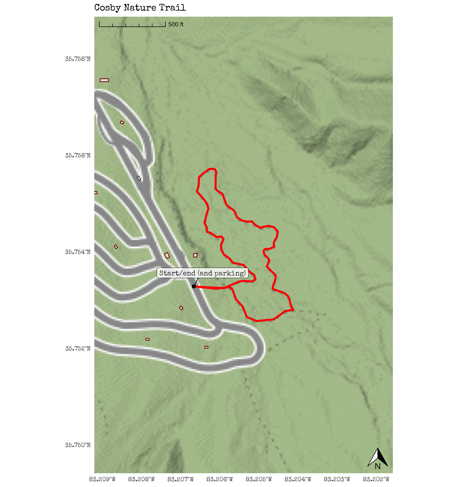

Chapter 25 Cosby
25.1 Trail Information
25.1.1 Ratings
| Hike Name | Beauty | Accessibility | Amenities | Challenge |
|---|---|---|---|---|
| Cosby Nature Trail | 4 | 3 | 4 | 2 |
25.1.2 Basic Characteristics
Location: Great Smoky Mountains National Park
Region: The Smokies and Beyond
Distance: 0.79 (mi.)
Elevation (Ascend): 124 (ft.)
Max. Elevation: 2390 (ft.)
25.2 Overview
25.3 Map

Figure 25.1: Seven Islands Loop Trail Map